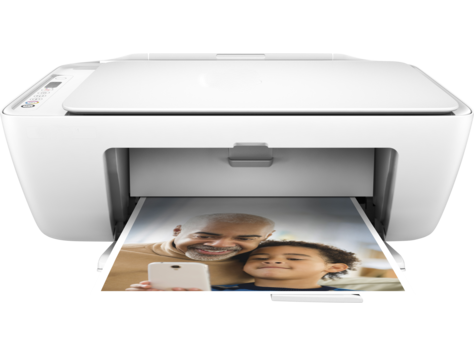

HP Deskjet 2624 PRINTER SETUP AND INSTALL
Print your document from computer or mobile device with the Wireless HP Deskjet 2624 all-in-one printer. This compact design saves space in a small office. Its fits in any of your desks. This printer produces print speed up to 7.5 ppm for black and 5.5 ppm for color. Print on both sides of the page with the automatic duplex printing feature.
Features
- Print, Copy, and Scan
- Borderless printing
- Automatic Duplex printing
- Connectivity: USB and Wireless
- Mobile printing

123 HP Deskjet 2624 Printer setup and install
How to install the HP Deskjet 2624 printer driver
- Go to our website, choose the Software Download option to avail the latest driver and software. Based on the operating system download the compatible driver and software for your 123.hp.com/deskjet 2624 printer.
- After downloading the driver, install it based on the instructions displayed on the screen. During the installation process, choose the connection type.
- Check the printer compatibility and based on that select the connection type. After completing the installation process, start to print a sample document.
Printing from the start screen app
- When you install an application in Windows 8, the system will create a tile on the Start Screen. Right-click the app in the list and then click Pin to add the app to the Start screen.
- Open the app that contains information that you want to print. Choose your 123.hp.com/deskjet 2624 printer that must handle the print job. The printer window provides a preview of what you’re printing.
- Press the Print button. Choose the desired number of copies to be printed. For more information, contact our technical experts on the toll-free number.
Printing from the Desktop app
- Configure the HP smart app and then add your printer. Get the app from app store and then use the instructions to download and install the app.
- From the HP Smart app. Select the Print tile and then choose Print Document or Print photo. Choose the document or photo you want to print.
- From the preview window, click on the Print option. Select Done from the HP Smart app. The app return to the home screen.
How to check the supply levels for the ink
- Employ the HP Smart app to verify the estimated ink or toner levels from your mobile, tablet or a Windows computer. On your device, search for the app and install the app.
- Use the guides displayed on the screen to set up your printer with the app. The estimated ink or toner levels display on the home screen.
- To avail more information, contact our technical support team on the toll-free number.
123 HP Deskjet 2624 Mobile printing
Nowadays, mobile printing is more preferable. No one has the time to go to the printing shop to take printouts. All prefer to take a printout on the go. How is it possible? With the help of mobile printing, you can achieve it. All you need to do is, connect your 123.hp.com/deskjet 2624 printer and mobile device to the same wireless network connection and start printing it.
123 HP deskjet 2624 eprint
- On your Android mobile, navigate to Play Store to download the ePrint app. Based on your convenience, choose the location on your mobile and install the ePrint app.
- Connect the printer and mobile device to the same wireless network connection. The HP ePrint handles its print job by sending the required documents and photos to the printer via an email.
- Index the printer’s email address in the To: field. Enter a subject in the subject line. The email size should not exceed to 10MB, including attachments.
- It is not allowed to send more than 10 attachment per email print job. Encrypted, password protected or digitally signed documents are not supported.
- You cannot print email attachments without printing the email. HP ePrint does not support Open office files. Two-sided printing is not compatible by HP ePrint.
123 HP deskjet 2624 AirPrint
- Ensure that the printer is on and it is in a ready state to print a document or photo. Access the document, photo, webpage or email that you want to print.
- Click on the Action icon. Tap Print. From the Printer Options menu, choose Select Printer and then pick your printer from the list. Click Options to modify other settings if necessary.
- Some of the options, such as paper size might not be modified and need to be changed from the printer. If your printer is black ink only, the Options menu will not be displayed.
- Choose the desired number of copies that you would like to print and then click on the Print option. Be sure that the printer and apple device must be connected to the same wireless network connection through the process.
- For more information, contact our technical support team on the toll-free number.
HP deskjet 2624 Cloudprint
- Link your printer to Google Cloud Print via the Chrome browser on an Android device, smartphone or tablet. Power up the HP Deskjet 2624 printer, place plain paper in the input tray.
- Ensure that the ink cartridges are installed. Link the printer and Android device to the same wireless network.
- Download and install the Cloud Print from Google Play Store on your Android device. After completing the installation process, move back to the home screen and then click Settings.
- From the search field, enter printing and then choose the Printing option. Click On which is next to Cloud Print. Click Cloud Print, tap the menu icon and then choose Add Printer.
- Select the printer that you want to add, click Ok and then verify the registration on the printer’s control panel display. For any queries, call us on the toll-free number.
HP deskjet 2624 Wifi Direct
- Configure the updated version of HP Print Service Plugin or Mopria Print Service on your Android device. Download these plugins from Google Play Store.
- On your printer, enable Wi-Fi Direct. Choose Automatic to print without a password or click Manual to verify the print job from the printer or to require a password.
- On your Android device, click Settings and then tap Wi-Fi and ensure that it is set to On. Access the photo or document that you want to print and then click Print from the app menu.
- Instead, you can also use the Share option from an application to send the content to the print plugin. Ensure that DIRECT-xx-HP [your printer model] displays as your printer on the settings screen.
- Click on the Print option. For any queries, contact our technical support team on the toll-free number.
HP Deskjet 2624 Wireless Setup
- This document helps you to connect the printer to a wireless network connection.
- To connect the printer and computer to the wireless network, you need a wireless network name and password.
- Obtain the correct network details and link the printer and computer to the same wireless network connection.
- Turn on the printer, computer, and the wireless router. During the setup process, place the printer and computer within the range of the router.
- Navigate to our website, choose the Software Download option to get the full featured driver and software.
- After downloading it, you can install the driver on the computer where you have saved the documents for printing.
- During the installation process, you need to choose the connection type. Select the Wireless connection option.
- After completing the installation successfully, try to print a sample document using your printer.
- If the printer works well, you’re done. You can start to print the desired print job using your printer.
- For more information, you can contact our technical support team on the toll-free number.
HP Deskjet 2624 USB Setup
- Make use of the document which guides you to connect your printer and computer via a USB cable.
- Unplug the 123.hp.com/deskjet 2624 printer USB cable from the computer. Do not re-plug the cable until it is instructed during the driver installation.
- Right-click your printer icon and then click on the Remove device option.
- Close the Devices and Printers window and then move to the next step.
- Go to our website, click on the Software Download option to download the latest printer driver and software.
- Install it by using the instructions displayed on the screen. When instructed to choose a connection type, click USB.
- After finishing the installation process, you can attempt to print a sample document.
- If the document prints well, you are done. You can start to print a print job.
- If you find any issue, repeat the procedures which are given above. If you still find an issue, contact us on the toll-free number.
123 HP deskjet 2624 PRINTER FUNCTIONS
Scan Setup
- Ensure that your Android device is linked to the same wireless network that your printer is connected to.
- Download and install the HP Smart app on your Android device from Google Play Store.
- After installing, access the app and then click on the Start option. Agree to the Terms and Conditions, tap Continue.
- On the app home screen, click on the plus sign. The app searches for the printers linked to the network.
- In case you have one or more printers already linked to the wireless network, choose the printer you want to use.
- In the event that you are setting up a new printer on the network, click Add Printer or Set up a new printer and then use the on-screen guides to finish the printer setup.
- Position your document on the scanner glass. Open the HP Smart app, click Scan.
- Choose the Settings icon and then click on Done or Save. Select Scan to access the scan and modify the borders if required.
- In the event that you need to scan additional pages, click on the additional pages icon.
- Once the scan is complete, click Send, Save, Share or Print, based on the type of scan.
Copy Setup
- Use the HP Deskjet 2624 printer to copy printed documents or photos. All the documents are copied in normal print quality mode.
- You cannot modify the print quality mode when copying a document.
- Before you start copying your document, ensure that the printer is placed with paper.
- Lift the input tray. Move the paper width guide all the way to the left side.
- Place plain white paper into the input tray and then move the stack of paper down until it stops.
- Move the paper width guides to the right until it stops at the paper edge.
- Power up the printer and raise the scanner lid. Insert the document or photo on the scanner glass.
- Shut the scanner lid. Tap the Start Copy Black button or the Start Copy Color button on the printer’s control panel to initiate the copy job.
- Based on the needs, you can increase the number of copies. Copying starts after 2 seconds after the last button press.
- To avail more information, contact our technical support on the toll-free number.
123 HP DESKJET 2624 PRINTER TROUBLESHOOTING
Printer Offline
- When paper gets stuck inside the 123.hp.com/deskjet 2624 printer effectively halting the printing process, it is called paper jam. This is often accompanied by a code displayed on the touchscreen.
- This is frequently caused by using paper that is manufactured by third-party developers.
- Due to the low standard of the paper, it gets stuck in the roller causing paper jamming. To rectify, the paper has to be manually removed and reprinting attempted.
- The printer is reset to clear any issue that might be carried over by the printer since setting it up. Along with the printer, all peripheral devices are restarted as well.
- Optimum temperature is maintained so that the printer papers do not get clumped together due to moisture nor do they crumble with too much heat.
Print job stuck in print queue
- Employ the HP Print and Scan Doctor tool to fix and rectify the printer’s issue. If the printer prints a document, you’re done. In case the printer doesn’t work, continue to the next step.
- If the printer’s print job continues to get stuck when printing a document, reset the printing software system files by excluding and re-installing the printer driver.
- Deactivate the firewall software temporarily on your system to check if it is interfering with the print job. After deactivating the firewall clear the print queue and try to print again.
- If the printer starts printing a document, then modify the firewall setting to permit the Windows print spooler service access to the computer.
- Make use of System File Checker to identify any issues with system files and perform repairs. For any queries, consult our technical support on the toll-free number.
Scanner Connection Error
- Rebooting the computer and printer might restore a lost scan connection.
- Run the HP Print and Scan Doctor tool to identify and resolve the issue easily.
- Check the connection between the printer and computer. The connections must be proper.
- Uninstall the existing software and reinstall it. Use the updated driver and software for your printer.
- Try to scan a document or photo. If the printer scans successfully, you’re done. For any queries, contact our technical support team on the toll-free number.
Wireless troubleshooting
- Check whether that you have placed all the network connected devices within the range of the network coverage area.
- Use the correct wireless network name and password to connect the HP Deskjet 2624 printer and computer.
- In case you have changed the wireless network name and password, you need to reconfigure the network connection.
- Ensure that you have installed the updated printer driver and software on your computer where you have saved the documents for printing.
- Try to print a sample document or photo using your 123.hp.com/deskjet 2624 printer. For more information, contact our technical support team on the toll-free number.
Color or Black ink not printing
- Make use of a genuine ink cartridge to print your document or photo with best quality.
- Estimate the ink level of your cartridge. If the cartridge is empty or low, you need to replace it with a new one.
- Check whether that the black ink cartridge is placed on the right side of the slot and color ink is positioned into the left side of the slot. If the cartridge is not clean, the printer will not recognize it during the print process.
- Ensure that you have removed all the tapes and stickers from the cartridge, before inserting it.
- While inserting the cartridge, you are not supposed to touch the electrical contacts of the cartridge. For more details, you can consult our technical support team on the toll-free number.
TOP RELATED SEARCHES
- 123.hp.com/envy 4520
- 123.hp.com/Officejet 3830
- 123.hp.com/Officejet Pro 6960
- 123 hp Officejet Pro 8720 Scanner Setup
- 123 HP Printer Setup
- 123.hp.com
- Officejet Pro 6978 Papaer Jam
- HP Officejet Pro 6970
- Officejet Pro 8710 WIFI Protected Setup
Feel free to contact our HP Technical Support Team Call Us Toll-Free number +1-800-280-5391, if the issue persists still, refer our website for step by step manual.
123.hp.com/deskjet 2624